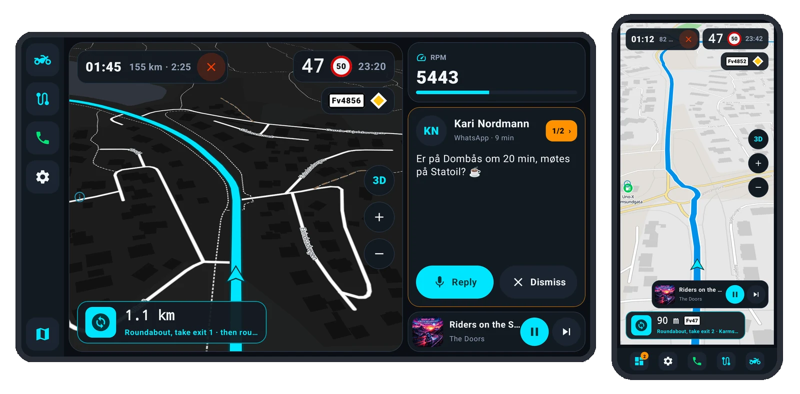
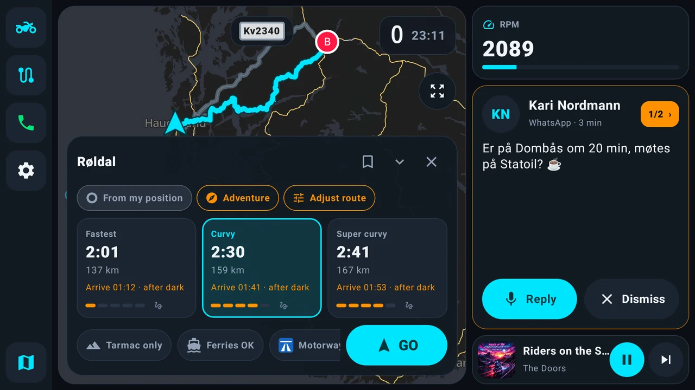
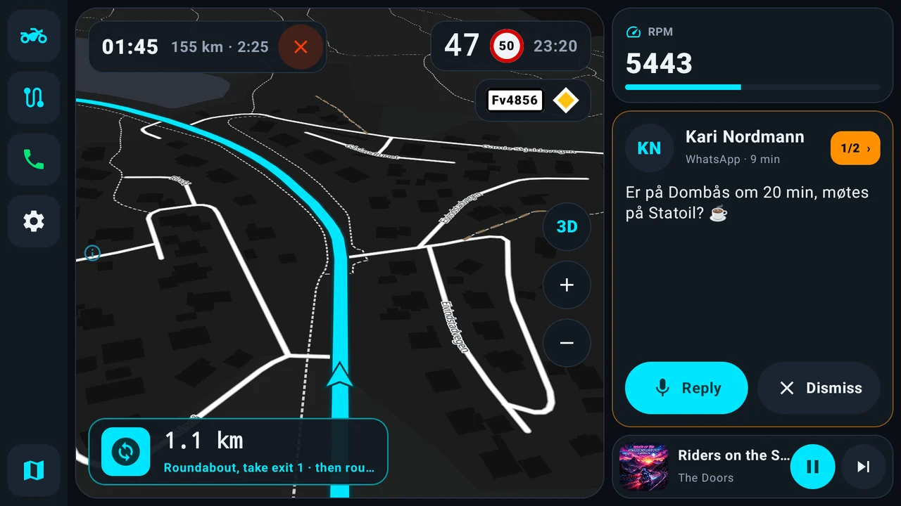
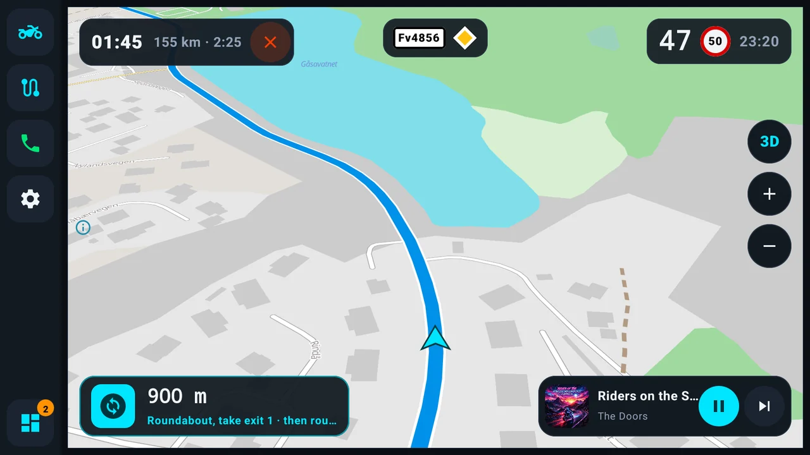
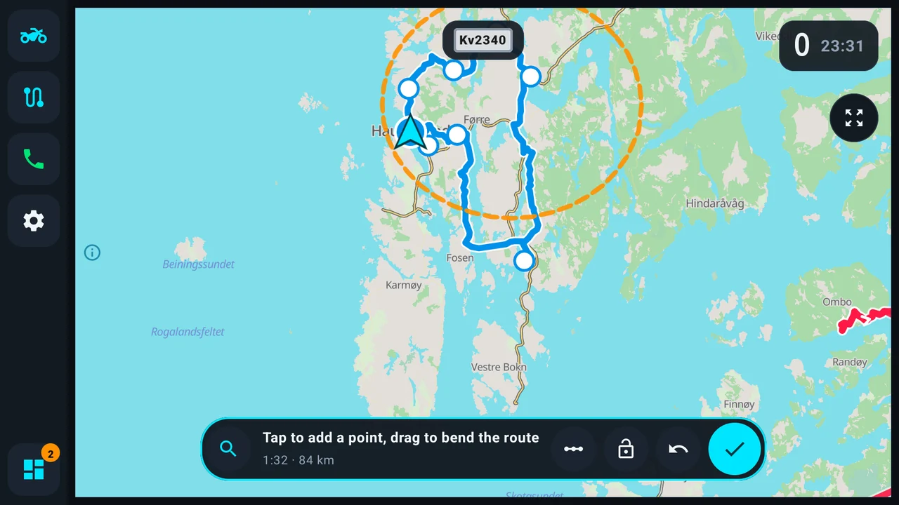
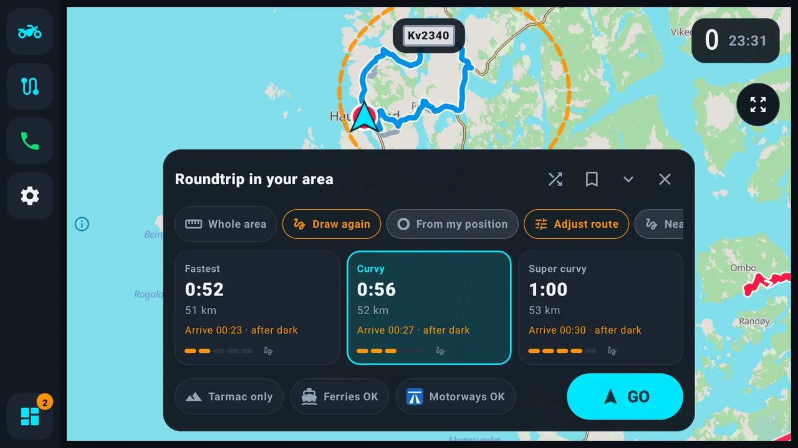
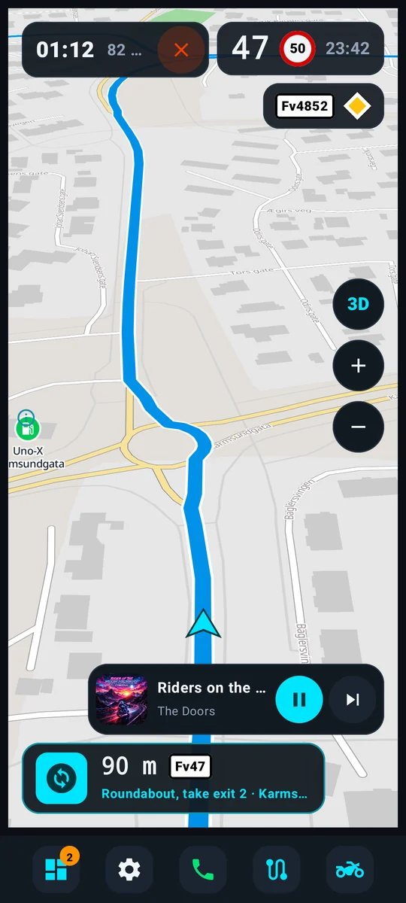
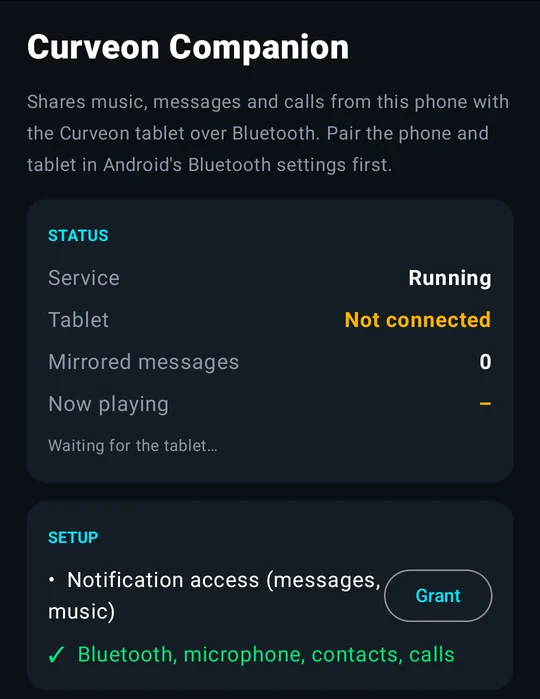

Finn de svingete veiene.
Også uten dekning.
Find the curvy roads.
Even without a signal.
Curveon gjør telefonen din, eller et nettbrett på styret, til et instrumentbord for turen: kart, svingvis navigasjon, musikk, meldinger og samtaler på én skjerm. Curveon turns your phone, or a tablet on the handlebars, into a dashboard for the ride: maps, turn-by-turn navigation, music, messages and calls on one screen.
Android 10 eller nyere · telefon eller nettbrett · norsk og engelskAndroid 10 or newer · phone or tablet · English and Norwegian

- Virker uten nettWorks offline
- Åpen kildekodeOpen source
- Ingen kontoNo account
- Ingen reklame eller sporingNo ads, no tracking
Tre ruter. Du velger hvor svingete.Three routes. You choose how curvy.
Søk opp et mål, og Curveon viser tre forslag side om side, med lengde og tid. Du ser med en gang hva svingene koster deg.Search for a destination and Curveon shows three suggestions side by side, with length and time, so you see at once what the curves cost you.
RaskestFastest
Fram på kortest tid, når det er målet som teller.There in the shortest time, when it's the destination that counts.
SvingeteCurvy
Tar gjerne en liten omvei for de gode veiene.Happy to take a little detour for the good roads.
Veldig svingeteSuper curvy
Svingene først, tiden etterpå.Curves first, time second.


Alt du trenger, ingenting du ikke trengerEverything you need, nothing you don't
Store knapper du treffer med hansker på, og tydelige tall som er lette å lese i sollys.Big buttons you can hit with gloves on, and clear numbers that are easy to read in sunlight.
- Neste sving med veinummer, og farten din ved siden av fartsgrensenThe next turn with road numbers, and your speed next to the speed limit
- Varsel om fotoboks, og vikepliktskilt før kryss i NorgeSpeed camera warnings, and give way signs before junctions in Norway
- Musikk og meldinger ved siden av kartet; svar med stemmen gjennom headsettetMusic and messages beside the map; reply by voice through your headset

Fjellet, tunnelen og utlandetMountains, tunnels and abroad
Last ned landene du kjører i én gang. Hvert land kommer med kart, ruting og søk, så alt virker uten mobildata.Download the countries you ride in once. Each one comes with its map, routing and search, so everything works with no mobile data.
- Søk etter steder, adresser, bensin, kafeer og utsiktspunkter uten nettSearch places, addresses, fuel, cafés and viewpoints offline
- Posisjonen følger ruten videre når GPS-en faller ut i tunnelerYour position keeps moving along the route when GPS drops out in tunnels
- Dag- og nattfarger som kan følge sola der du erDay and night colours that can follow the sun where you are

Gjør ruten til din egenMake the route your own
Dra linjen gjennom veien du liker, flytt et stopp eller legg til et punkt. Curveon finner veien på nytt mens du drar.Drag the line through a road you like, move a stop or add a point. Curveon re-routes as you go.
- Kun asfalt, eller uten ferger og motorveier, med ett trykkTarmac only, or no ferries or motorways, in one tap
- Kjør hvilket som helst GPX-spor, også motsatt veiRide any GPX track, also in reverse
- Lagre turer til senere, sortert i grupper som «Sommertur»Keep trips for later, sorted into groups like “Summer tour”
Laget av en som kjører selvMade by someone who rides
Tegn en rundturDraw a roundtrip
Vet du ikke hvor du vil? Tegn en ring rundt et område med fingeren, så finner Curveon en tur gjennom det som kommer hjem igjen, uten å kjøre samme vei to ganger.Don't know where to go? Circle an area with your finger and Curveon finds a loop through it that brings you home, without riding the same road twice.

Kjør sammenRide together
Se venner og gruppa på kartet, og del turer. Ende-til-ende-kryptert.See friends and the group on the map and share trips. End-to-end encrypted.
Samtaler uten å fomleCalls without fumbling
Et stort kort med Svar og Avvis når noen ringer.A big card with Answer and Decline when someone rings.
Turene logges selvRides log themselves
Lengde, tid, fart og stigning. Kjør dem igjen eller lagre som GPX.Distance, time, speeds and climb. Ride them again or save as GPX.
Bensin langs rutenFuel along the route
Med varsel før en lang strekning uten stasjoner.With a warning before a long gap without stations.
Lyd eller stemmeTones or a voice
Myke toner eller stemme før hver sving, rett i hjelmen.Soft tones or spoken directions before each turn, in your helmet.
MotordataEngine data
Turtall, temperatur og batteri med en OBD2-adapter (valgfritt).Revs, temperature and battery with an OBD2 adapter (optional).
Steder på kartetPlaces on the map
Bensin, utsiktspunkter, fjelloverganger, camping, kafeer og verksteder.Fuel, viewpoints, mountain passes, camping, cafés and workshops.
Hold på en veiHold on a road
Se fartsgrense, veinummer, veitype og dekke.See its speed limit, number, kind and surface.
Bare telefonen, eller et nettbrett på styretJust your phone, or a tablet on the bars
Begynn med telefonen du har. Vil du ha en større og lysere skjerm, setter du et Android-nettbrett på styret og lar telefonen ligge i lomma.Start with the phone you have. Want a bigger, brighter screen? Put an Android tablet on the bars and keep the phone in your pocket.

Bare telefonenJust your phone
Installer Curveon på telefonen du kjører med, så er du i gang. Meldinger, samtaler og musikk kommer fra telefonen selv.Install Curveon on the phone you ride with and you're set. Messages, calls and music come from the phone itself.

Nettbrett + Curveon CompanionTablet + Curveon Companion
Curveon Companion på telefonen sender musikk, meldinger og samtaler til nettbrettet over Bluetooth.Curveon Companion on the phone sends music, messages and calls to the tablet over Bluetooth.
Turen begynner ved kjøkkenbordetThe trip starts at the kitchen table
Åpne curveon.no/plan på PC-en, skann koden med Curveon én gang, og jobb med turene dine på samme kart og samme veier. Nye turer havner rett på telefonen eller nettbrettet.Open curveon.no/plan on your computer, scan its code with Curveon once, and work on your trips on the same map and roads. New trips land straight on your phone or tablet.
Åpne planleggerenOpen the planner- Planlegg i nettleserenPlan in the browser
- Skann koden én gangScan the code once
- Turen ligger under PlanlagtThe trip is under Planned
Klar for neste tur?Ready for the next ride?
Foreløpig installerer du Curveon direkte fra GitHub. Google Play kommer.For now you install Curveon straight from GitHub. Google Play is coming.
- Last nedDownloadÅpne nedlastingssiden på telefonen eller nettbrettet, og trykk på Curveon-filen (.apk) under «Assets».Open the download page on your phone or tablet and tap the Curveon file (.apk) under “Assets”.
- InstallerInstallAndroid spør om nettleseren får installere apper. Tillat det én gang, og trykk Installer.Android asks whether your browser may install apps. Allow it once, then tap Install.
- Hent kartGet mapsI Curveon: Innstillinger → Kart og data → Last ned land, mens du er på wifi.In Curveon: Settings → Maps & data → Download countries, while on Wi-Fi.
- KjørRideTrykk på motorsykkelknappen og søk opp hvor du skal.Tap the motorcycle button and search for where you're going.
Skal du bruke nettbrett på styret, laster du også ned Curveon Companion (.apk) fra samme side, på telefonen.Using a tablet on the bars? Also download Curveon Companion (.apk) from the same page, on your phone.
Lurer du på noe?Wondering about something?
Virker Curveon på iPhone?Does Curveon work on an iPhone?
Nei, appen finnes bare for Android (versjon 10 eller nyere). Planleggeren på curveon.no/plan virker i alle nettlesere.No, the app is Android only (version 10 or newer). The planner at curveon.no/plan works in any browser.
Trenger jeg mobildekning når jeg kjører?Do I need a mobile signal while riding?
Nei. Når du har lastet ned landene du kjører i, virker kart, ruting og søk uten nett. Med nett kan Curveon også vise kart for steder du ikke har lastet ned.No. Once you have downloaded the countries you ride in, maps, routing and search work offline. Online, Curveon can also show the map for places you haven't downloaded.
Hvorfor ligger ikke Curveon på Google Play?Why isn't Curveon on Google Play?
Det kommer. Til da installerer du fra GitHub, og Curveon sier selv fra når det finnes en ny versjon og installerer den for deg.It's coming. Until then you install from GitHub, and Curveon tells you when a new version is out and installs it for you.
Hva skjer med posisjonen min?What happens to my location?
Den blir på enheten din. Kjører du i gruppe, deles den bare med gruppen, ende-til-ende-kryptert, og den lagres aldri på serveren. Ingen konto, ingen reklame og ingen analyse. Les mer i personvernerklæringen.It stays on your device. In a group ride it is only shared with the group, end-to-end encrypted, and never stored on the server. No account, no ads and no analytics. More in the privacy policy.
Hvordan melder jeg en feil eller kommer med et forslag?How do I report a bug or suggest something?
I appen: Innstillinger → Hjelp. Skriv noen ord, legg ved bilder om du vil, og trykk Send. Du trenger ingen GitHub-konto.In the app: Settings → Help. Write a few words, add pictures if you like, and tap Send. No GitHub account needed.